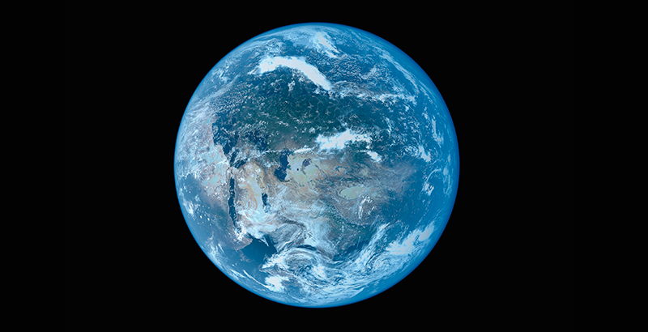
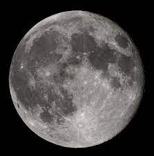

Tierra

La Tierra es un planeta del sistema solar que gira alrededor
de su estrella —el Sol— en la tercera órbita más interna. Es
el más denso y el quinto mayor de los ocho planetas del
sistema solar. También es el mayor de los cuatro terrestres
o rocosos.
|
|

Luna
La Luna es el único satélite natural de la Tierra. Con
un diámetro ecuatorial de 3476 km, es el quinto satélite
más grande del sistema solar, mientras que en cuanto al
tamaño proporcional respecto a su planeta es el satélite
más grande: un cuarto del diámetro de la Tierra y 1/81
de su masa.
|
|